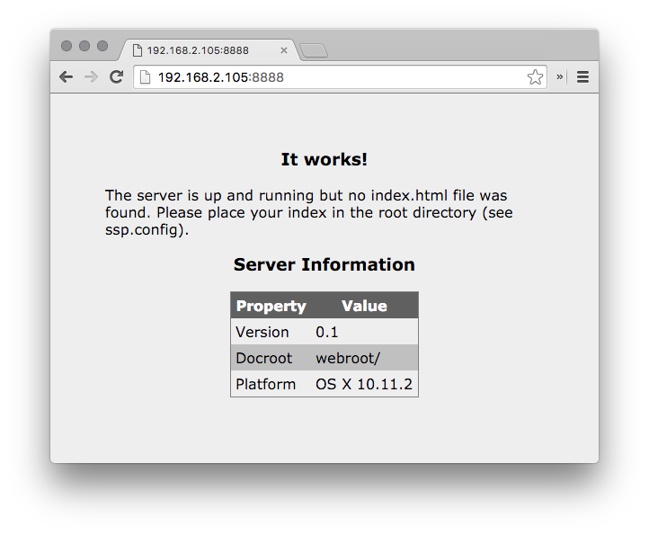

This will download the theatre source code which can be run as-is - no compilation necessary. This isn't to say that everything is good to go out of the box as you will want to configure theatre before running it (see Configuring: theatre.config).
Once you've got the source, simply change into the directory with the theatre source:
$cd theatre/src/
And execute the theatre Python script:
$python theatre.py
Configure: theatre.config
Before you jump in, you'll want to edit theatre.config.
theatre.config
To best explore the configuration file, let's look at it one section at a time.
[setup]
# This can be any valid port.
# Possible values: 1025-65536
port=8888
# Detailed logging information. Do you want to know everything or just a brief overview with each request?
# Possible values: True or False (or anything technically as anything but True is counted as False)
detailed=True
# Print out client info to the console when requests are made.
# Possible values: True or False (or anything technically as anything but True is counted as False)
clientInfo=True
# Where should content be logged.
logfile=theatre.log
# This controls how theatre reports the IP that pages are served from. There are two options, True or False. If set to True (or anything but False), your local host's IP address is returned. If this is False, a fully qualified domain name is returned. If you're unsure as to what you should use, try setting this to True and if you don't see your local IP, set it to False. On some platforms with different host configurations, this may require some trial and error.
usehostname=True
# FreeBSD throws an error when getting the IP unless a workaround (netifaces) is used and Linux sometimes doesn't report back the proper interface. Setting this to True makes use of an alternative method to get your local IP.
# NOTE: Using netifaces requires that you have it installed. Execute "pip install netifaces" or use your Linux distribution's or FreeBSD's native netifaces packages (ports: /net/py27-netifaces) if you're running the Python version.
# NOTE 2: While OS X also qualifies as *nix, this workaround isn't needed but can be used.
use_nix_ip_workaround=False
# If you use the *nix workaround above, set the network interface here.
nix_interface=en1
# Set this to True to have your external IP reported back at startup.
# NOTE: MyExternalIP limits requests to 30/minute so don't restart the server with this set to True more than 30 times per minute (would you even be doing that anyway?).
useExternalIP=False
Use this section to set default values for basic functionality. This is also the section to set OS specific values. For example, Linux machines may require a workaround to get the IP displayed when started and FreeBSD will most definitely need the workaround set (at least on 10.2) and will require you to set the network interface that you'll be serving on (use_nix_ip_workaround and nix_interface preferences).
[content]
# The docroot (where the server should look for things to serve)
# Possible values: a valid directory.
docroot=webroot/
# This inserts a "powered by" string at the bottom.
# Possible values: true or false.
poweredby=true
# Custom 404 page.
custom404=webroot/404.html
The docroot is the key property here - this is where you'll be serving content out of. You can also add a "Powered by theatre" label to the bottom of each page if you so choose. Finally, you can set a custom 404 page if someone requests a page that doesn't exist.
[redirect]
# Redirect to a different page if you've moved hosts or for whatever reason.
# Possible values: True or False
redirect=False
# The URL to redirect to if 'redirect' is set to True.
url=http://www.example.com
# Timeout for the redirect
timeout=5
This section outlines whether or not you want to redirect users to a different location. Note: this is an "all or nothing" situation; use this only if you've moved hosts or just want to direct people elsewhere.
[stats]
# The location of the database with statistics info.
# Possible values: a valid directory and file location.
location=.
# Output location for csv file (if selected as an option).
output_csv=.
# Output location for the html graph file.
output_html=.
# Show the daily requests. By default, the requests by date are shown which could get overwhelming.
show_daily_requests=True
This section controls the settings for theatre_stats. Much of this is self-explanatory - location and the output_csv and output_html settings control the locations of the stats db and where various types of output ought to be stored. show_daily_requests determines whether or not you see daily activity (which might get overwhelming and/or it might be irrelevant to you).
[server]
# If this is true, you can access server info at /sysinfo.
status=False
# If this is true, you set it such that going to /sysinfo wont be enough and you'll need to enter more info (see complex_status_path).
complex_status=True
# If complex_status is True, you'll need to navigate to /sysinfo/<complex_status_path>/
# NOTE: You'll want to change this.
# NOTE 2: This is by no means a secure way of protecting this data. If you really don't want anyone to see this, don't set status to True.
complex_status_path=A7h3nskso
This section sets up and enables the server status section. If you feel the need to monitor the log and system resoure usage remotely, you can enable this. Note: as of right now, this isn't secured or password protected (the best you can do at this point is set a really complex path). Use only if you are comfortable with the possibility of others seeing this info.[auth]
# Do you want to password protect your web server?
auth_enabled=True
# Password key
# NOTE: Generate one of these theatre_auth_gen.
# NOTE: The default is theatre (user) / theatre (pass). This is what is set as the default below.
auth_key=dGhlYXRyZTp0aGVhdHJl
You can set up some basic authentication here. Simply use theatre_auth_gen to generate a base64 encoded string out of a username and password. Note, because this is simply base64 encoded, decoding it is easy (thus making your username and password visible). Try to restrict access to this file if this is a concern.
Note: You can also set up the base64 encoded string using the tool below.
Setup Credentials
Please enter a string above to encode in the format user:pass.Using
Once you've got everything configured, you can start serving content. theatre is a simple Python script so it can be executed like so:
$python theatre.py
Once you do that, you'll see something similar to the following:
At this point, you can navigate to the URL http://192.168.2.105:8888 from above.
If you need a quick test on a system without X/UI and you have cURL available to you, execute the following (replace IP as appropriate):
$curl --silent 192.168.2.105:8888 > /dev/null
When you execute that, you will see a single request registered in theatre from an unknown browser and OS from the IP of the machine that you make the request from.
When you navigate to that page from a web browser, you'll see the following appear in the log:
[RQ] (03/Jan/2016 18:31:37): 192.168.2.105 ==> "GET / HTTP/1.1" 200 -
[CL] MacOS Macintosh X 10.11.2, Chrome 48.0.2564.48
[RQ] (03/Jan/2016 18:31:37): 192.168.2.105 ==> "GET /favicon.ico HTTP/1.1" 200 -
[CL] MacOS Macintosh X 10.11.2, Chrome 48.0.2564.48
In the example above, you can see two requests ([RQ]) coming from a machine at 192.168.2.105, one made for the root (index.html) and a favicon. Since [setup] > detailed is True by default, you also see information about the browser and operating system where the request originates ([CL]). In this case, the requests were made from a Mac running Chrome.
With no index.html file in your webroot folder, you'll be greeted with the following:

Once you place an index file in your webroot, it will be loaded. Of course, you can go without an index and navigate directly to other files stored in your webroot.
Stopping
To stop theatre, simply press Ctrl-C. When you do this, you'll be told how long your server was running:
Closing theatre...
Run Time: 0:05:39
Log
Here is a "legend" for the differen types of codes you'll see before each line in your log:
[RQ] - Requests made by client to theatre.
[CL] - Client information for each request.
[ER] - Errors in the requests made (eg. 404s).
Statistics: theatre_stats
Built into the functionality of theatre is statistics tracking. As of now, browser, os and request counts are logged. These stats can be accessed by running the theatre_stats.py script:
$python theatre_stats.py
When you run this, you will see something similar to the following:
You can also use the following switches to export the data as either a comma seperated values file or a visualized form of the stats in graph form in a HTML document.
export_csv- export the stats as a csv file.
export_html1- export the stats as a graph in a HTML file.
1 The graph in the HTML document depends on external APIs so a connection to the Internet is required to view the graph (although it is not required to generate the graph).
export_csv
The csv output looks similar to the following: